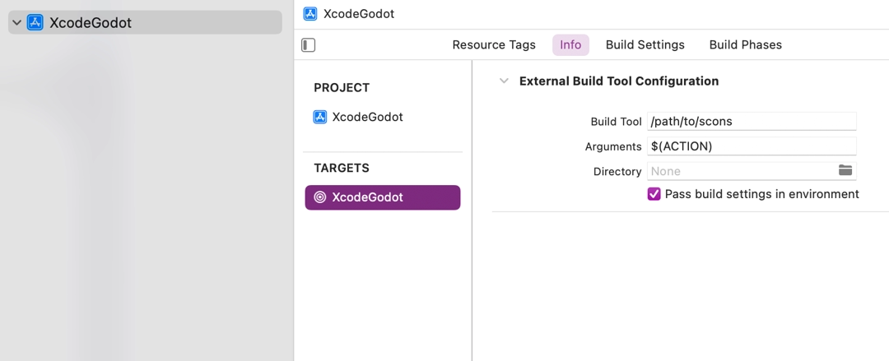
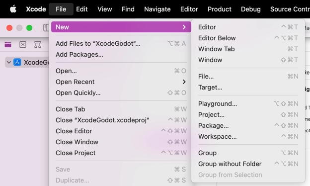
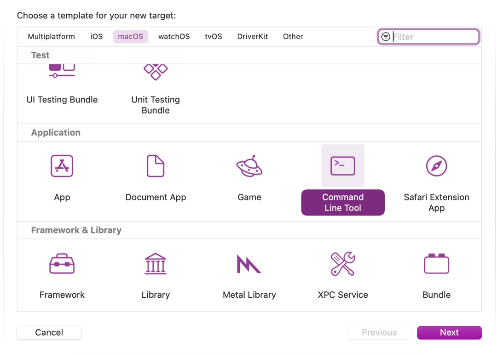
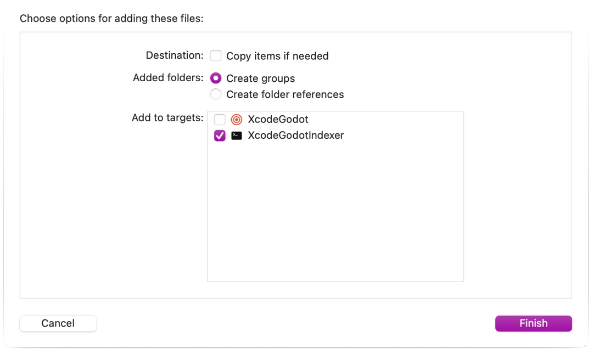
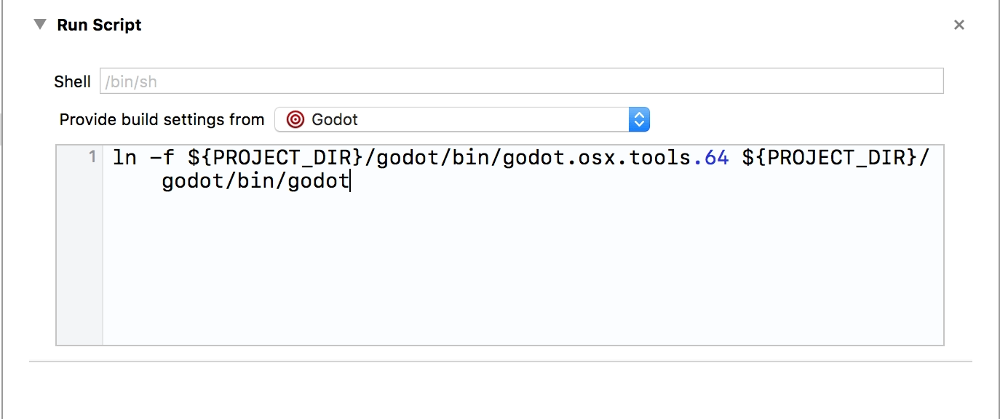

Xcode
Xcode is a free macOS-only IDE. You can download it from the Mac App Store.
Importing the project
From Xcode's main screen create a new project using the Other > External Build System template.

Now choose a name for your project and set the path to scons executable in build tool (to find the path you can type
where sconsin a terminal).

Open the main target from the Targets section and select the Info tab.

Fill out the form with the following settings:
Arguments
See Introduction to the buildsystem for a full list of arguments.
Directory
A full path to the Godot root folder
Add a Command Line Tool target which will be used for indexing the project by choosing File > New > Target....

Select macOS > Application > Command Line Tool.

Note
Name it something so you know not to compile with this target (e.g. GodotXcodeIndex).
For this target open the Build Settings tab and look for Header Search Paths.
Set Header Search Paths to the absolute path to the Godot root folder. You need to include subdirectories as well. To achieve that, add two two asterisks (
**) to the end of the path, e.g./Users/me/repos/godot-source/**.Add the Godot source to the project by dragging and dropping it into the project file browser.
Select Create groups for the Added folders option and check only your command line indexing target in the Add to targets section.

Xcode will now index the files. This may take a few minutes.
Once Xcode is done indexing, you should have jump-to-definition, autocompletion, and full syntax highlighting.
Debugging the project
To enable debugging support you need to edit the external build target's build and run schemes.
Open the scheme editor of the external build target.
Locate the Build > Post Actions section.
Add a new script run action
Under Provide build settings from select your project. This allows to reference the project directory within the script.
Create a script that will give the binary a name that Xcode can recognize, e.g.:
ln -f ${PROJECT_DIR}/godot/bin/godot.macos.tools.64 ${PROJECT_DIR}/godot/bin/godot

Build the external build target.
Open the scheme editor again and select Run.

Set the Executable to the file you linked in your post-build action script.
Check Debug executable.
You can add two arguments on the Arguments tab: the
-eflag opens the editor instead of the Project Manager, and the--pathargument tells the executable to open the specified project (must be provided as an absolute path to the project root, not theproject.godotfile).
To check that everything is working, put a breakpoint in platform/macos/godot_main_macos.mm and
run the project.
If you run into any issues, ask for help in one of Godot's community channels.